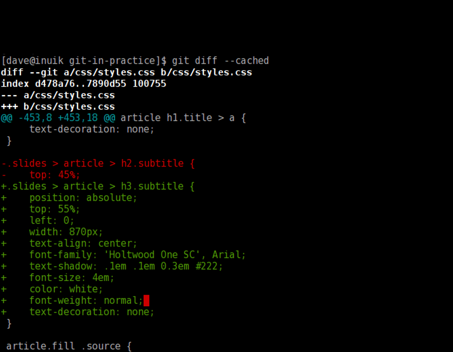
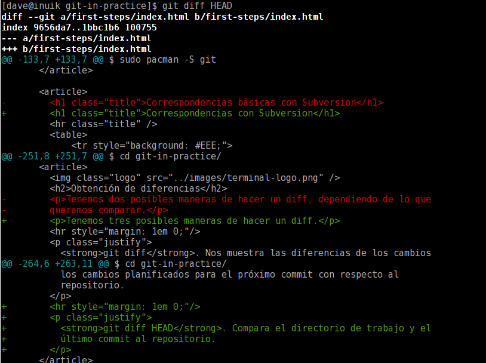
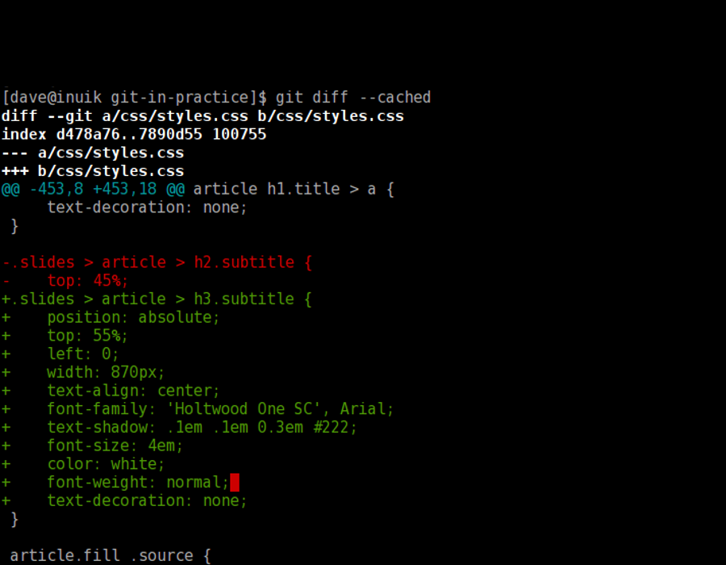
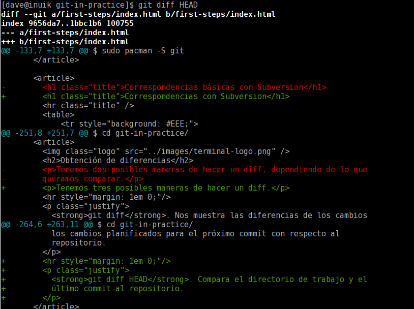

En el capítulo de hoy...
Git in practice
Primeros pasos
Apreta la tecla → para avanzar.
Git es un software de control de versiones distribuido pensado para la eficiencia y confiabilidad del mantenimiento de versiones de aplicaciones cuando éstas tienen un gran número de archivos de código fuente.
El diseño de Git resulta de la experiencia del diseñador de Linux, Linus Torvalds, manteniendo una enorme cantidad de código distribuido y gestionado por mucha gente, que incide en numerosos detalles de rendimiento.

¿En qué plataformas funciona Git?

La instalación de Git dependerá de la plataforma, pero suele ser un proceso trivial ya que viene empaquetado en todas las distribuciones.
# En Ubuntu/debian $ sudo apt-get install git # En Archlinux $ sudo pacman -S git
En Windows o MacOSX puede ser un poco más laborioso, pero no mucho más.
| Git | Subversion |
|---|---|
| git add <file> | svn add <file> |
| git rm <file> | svn rm <file> |
| git mv <file> | svn mv <file> |
| git diff | svn diff | less |
| git log | svn log | less |
| git status | svn status |
| git commit -a | svn commit |
| git clone <url> | svn checkout <url> |
| git checkout <path> | svn revert <path> |
| git tag -a <tag-name> | svn copy <url1> <url2> |
| git branch <branch-name> | svn copy <url1> <url2> |
El índice de Git es una zona intermedia que almacena los cambios que queremos hacer efectivos en el próximo commit, es decir, una zona a medio camino entre el repositorio local y tu directorio de trabajo.
Lo utilizaremos para construir un commit que agrupe modificaciones en varios archivos.
Cuando hagamos el commit, se enviarán los cambios que hayamos especificado en el índice, que no tiene por qué coincidir con lo que haya en nuestro directorio de trabajo.
El comando que nos muestra la información sobre el estado del índice es git status.


Diferencia fundamental con respecto al modo de trabajar de otros SCM. Git trabaja almacenando instantáneas de un conjunto de archivos modificados (y planificados a través del índice). Otros sistemas de control de revisiones trabajan a nivel de archivo individual.
En cada instantánea los cambios que se mandan al repositorio al hacer el commit son los de aquellos archivos planificados en el índice.
Un directorio de trabajo limpio es aquel en el que no tenemos ningún archivo modificado con respecto al último commit, ni tenemos ningún archivo planificado para el próximo commit en el índice.
[~/git-in-practice]$ git status # On branch master nothing to commit (working directory clean)

git init. Es el comando que nos permite iniciar el control de versiones sobre un directorio.
# Creamos un directorio y un archivo $ mkdir helloworld $ cd hellworld [~/helloworld]$ echo "Hello World" > README # Inicializamos el repositorio [~/helloworld]$ git init Initialized empty Git repository in /home/dave/helloworld/.git/
git clone. Este comando obtiene una copia local de un repositorio remoto.
# Clonamos el repositorio fuente de esta presentacion $ git clone git@github.com:tombatossals/git-in-practice.git Cloning into 'git-in-practice'... remote: Counting objects: 49, done. remote: Compressing objects: 100% (40/40), done. remote: Total 49 (delta 11), reused 44 (delta 6) Receiving objects: 100% (49/49), 425.79 KiB | 117 KiB/s, done. Resolving deltas: 100% (11/11), done. $ cd git-in-practice/ [~/git-in-practice]$ ls 500.html css first fonts images index.html js README.md
Una de las cosas que más llaman la atención es lo limpio que queda todo en tu directorio de trabajo. Si al clonar un repositorio lo estamos obteniendo de manera completa...
Ejercicio: Ejecuta un "find .git" en tu directorio de trabajo y echa un vistazo a la estructura de archivos que hay creada.
add/rm/mv. Son las operaciones más básicas sobre archivos en el repositorio respecto al directorio de trabajo.
# Añadir un archivo local al repositorio [~/git-in-practice]$ git add 404.html # Mover un archivo a otro directorio (también renombrar) [~/git-in-practice]$ git mv TODO first-steps/ # Borrar un archivo del repositorio y local [~/git-in-practice]$ git rm hola
Tenemos tres posibles maneras de hacer un diff.
git diff. Nos muestra las diferencias de los cambios que todavía no hemos planificado para el próximo commit.
git diff --cached. Nos muestra las diferencias de los cambios planificados para el próximo commit con respecto al repositorio.
git diff HEAD. Compara el directorio de trabajo y el último commit al repositorio.
 



Cambia de foto con las teclas: ↑ y ↓
git config. Establece algunas variables básicas de trabajo, que se trasladarán al archivo de configuración de usuario.
$ git config --global user.name "Peter Pan"
$ git config --global user.email "peter.pan@nuncajamas.com"
$ git config --global color.ui true
# Se modifica el archivo de configuración global de git
$ cat $HOME/.gitconfig
[user]
name = Peter Pan
email = peter.pan@nuncajamas.com
[color]
ui = true
git commit. Envía una transacción al repositorio local con todos los cambios planificados en los archivos del índice. Es habitual enviar un comentario con los cambios hechos en el commit.
[~/git-in-practice]$ git commit [master 1495512] New slides, and demo commit for the slides 3 files changed, 79 insertions(+), 28 deletions(-)
Tenemos un commando especial para vagos, que es: git commit -a, que enviará todos los cambios a aquellos archivos que ya estaban en el repositorio, aunque no los hayamos añadido al índice.
git reset HEAD. Limpia todos aquellos archivos y cambios que se habían planificado en el índice para el próximo commit.
[dave@inuik git-in-practice]$ git reset HEAD Unstaged changes after reset: M first-steps/index.html
Podemos quitar del índice un único archivo si así lo queremos, especificando el nombre del archivo al final del comando: git reset HEAD -- file.cfg. Los dos guiones -- delimitan el final de las opciones del comando y el inicio de los paths de archivo.

Esta presentación es una charla de iniciación a Git con la que he disfrutado como un enano haciéndola/aprendiendo a hacerla. Estos son algunos enlaces al software/hosting utilizados para realizarla.
Enlaces de la documentación escrita utilizada para realizar la presentación, además de la propia experiencia personal.